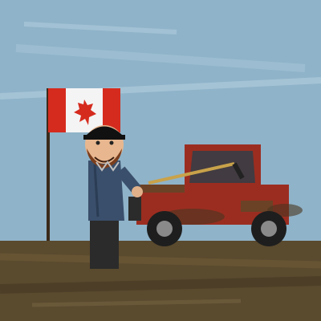

Tad's World
Well, hello there. Pull up a lawn chair. Nobody's signed the guestbook yet, so you're the first, and I'm choosing to take that as a compliment.
I'm Tad. Big guy, red-brown beard, black ball cap that's seen better decades, and a silver chain I forgot I was wearing. I like old 4x4 Chevys that barely run, fishing before the sun's up, and mudding when the ground's soft enough to forgive you. If it's got a motor and a bad attitude, I'm interested.

What I'm working on
I've got a notebook full of 3D printing ideas. I don't own a printer yet. My buddy Patrick says he might print the good ones for real, so we'll see. So far the book says:
- Mud flap hitch cover, $20
- Square-body Chevy keychain, $15
- Bass lure box divider, $15
- Beaver bottle opener, $22
If you want to buy one before I've got a printer, that's between you and the shop: the shop. Live stuff happens at tads.world.
Things I'm sure about
Gas prices, my power bill, and the Liberals. I've got a shirt about it. Maple leaf on the back, for the U. Prime Minister Mark Carney can take that however he likes.
I own more NHL jerseys than any reasonable man should. Every team, most of the history, and I'll argue about all of it.
Some days the house is too quiet and I miss the noise. I won't say more than that. Don't make me.
Say hello on the live stream if you're around. I'll be the one in the cap, probably complaining about something with a motor.